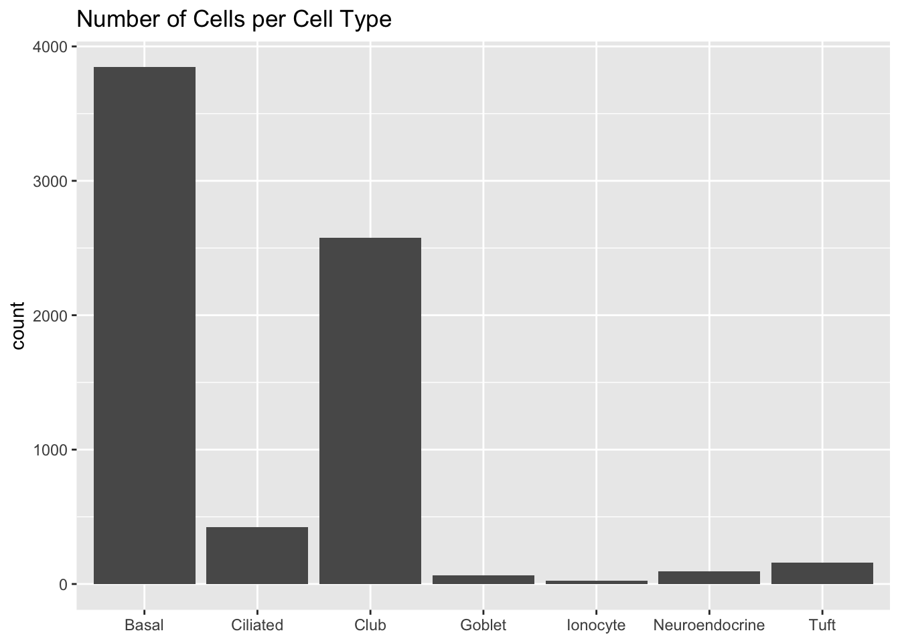
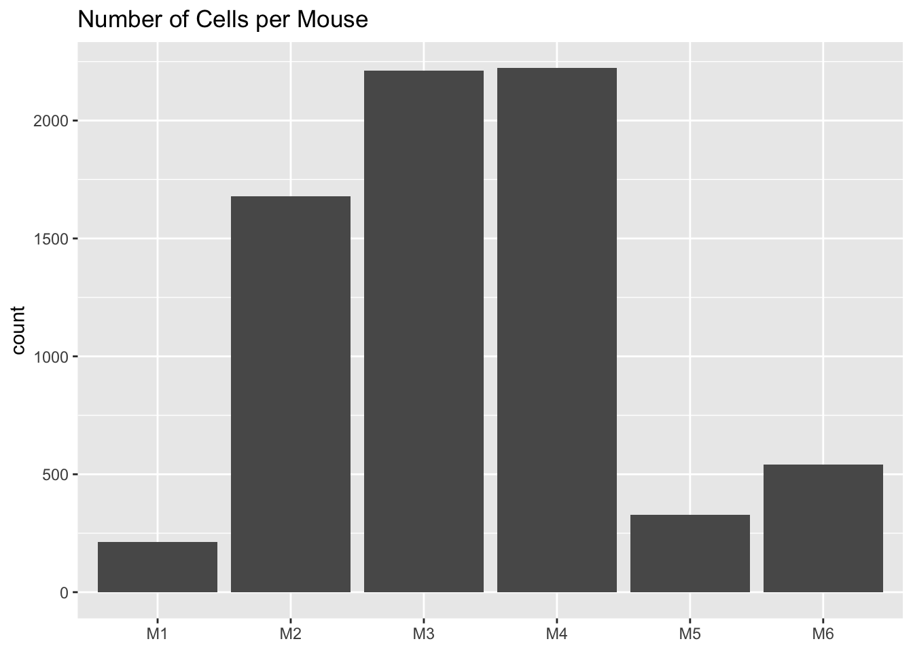
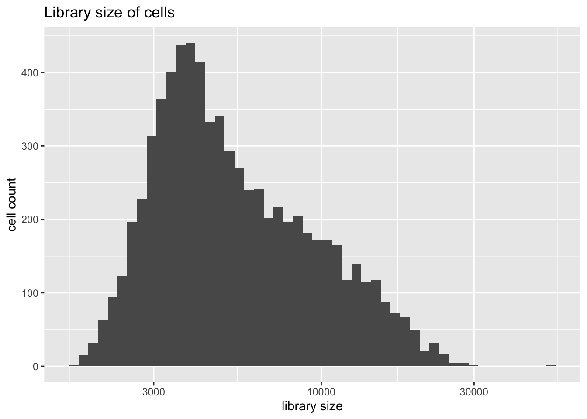
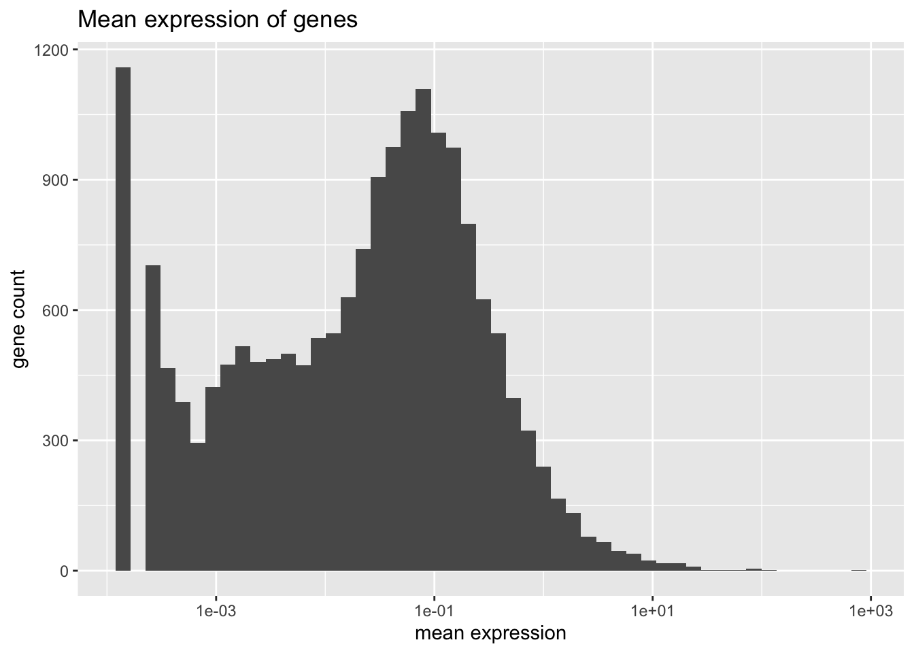
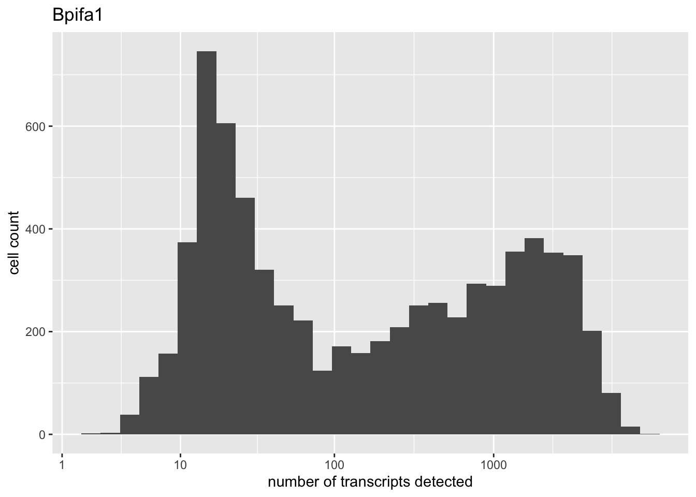
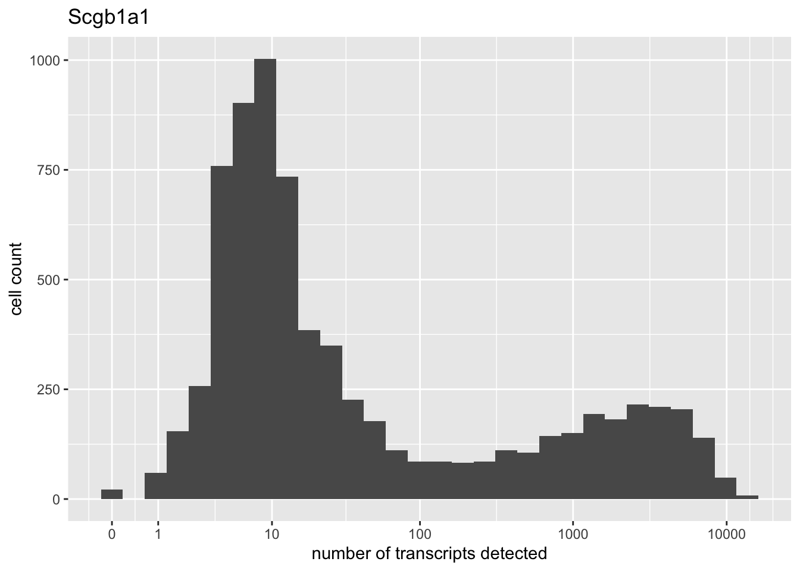

Last updated: 2019-08-31
Checks: 6 0
Knit directory: scFLASH/
This reproducible R Markdown analysis was created with workflowr (version 1.2.0). The Report tab describes the reproducibility checks that were applied when the results were created. The Past versions tab lists the development history.
Great! Since the R Markdown file has been committed to the Git repository, you know the exact version of the code that produced these results.
Great job! The global environment was empty. Objects defined in the global environment can affect the analysis in your R Markdown file in unknown ways. For reproduciblity it’s best to always run the code in an empty environment.
The command set.seed(20181103) was run prior to running the code in the R Markdown file. Setting a seed ensures that any results that rely on randomness, e.g. subsampling or permutations, are reproducible.
Great job! Recording the operating system, R version, and package versions is critical for reproducibility.
Nice! There were no cached chunks for this analysis, so you can be confident that you successfully produced the results during this run.
Great! You are using Git for version control. Tracking code development and connecting the code version to the results is critical for reproducibility. The version displayed above was the version of the Git repository at the time these results were generated.
Note that you need to be careful to ensure that all relevant files for the analysis have been committed to Git prior to generating the results (you can use wflow_publish or wflow_git_commit). workflowr only checks the R Markdown file, but you know if there are other scripts or data files that it depends on. Below is the status of the Git repository when the results were generated:
Ignored files:
Ignored: .DS_Store
Ignored: .Rhistory
Ignored: .Rproj.user/
Ignored: data/droplet.rds
Ignored: output/backfit/
Ignored: output/prior_type/
Ignored: output/size_factors/
Ignored: output/var_type/
Untracked files:
Untracked: analysis/NBapprox.Rmd
Untracked: analysis/pseudocount2.Rmd
Untracked: analysis/pseudocount_redux.Rmd
Untracked: analysis/trachea4.Rmd
Untracked: code/missing_data.R
Untracked: code/pseudocount/
Untracked: code/pseudocounts.R
Untracked: code/trachea4.R
Untracked: code/var_type/vartype_fits.R
Untracked: data/Ensembl2Reactome.txt
Untracked: data/hard_bimodal1.txt
Untracked: data/hard_bimodal2.txt
Untracked: data/hard_bimodal3.txt
Untracked: data/mus_pathways.rds
Untracked: docs/figure/pseudocount2.Rmd/
Untracked: docs/figure/pseudocount_redux.Rmd/
Untracked: output/pseudocount/
Unstaged changes:
Modified: analysis/index.Rmd
Modified: analysis/pseudocount.Rmd
Modified: analysis/var_type.Rmd
Modified: code/sc_comparisons.R
Modified: code/size_factors/flashier_fits.R
Modified: code/utils.R
Deleted: code/var_type/flashier_fits.R
Note that any generated files, e.g. HTML, png, CSS, etc., are not included in this status report because it is ok for generated content to have uncommitted changes.
These are the previous versions of the R Markdown and HTML files. If you’ve configured a remote Git repository (see ?wflow_git_remote), click on the hyperlinks in the table below to view them.
| File | Version | Author | Date | Message |
|---|---|---|---|---|
| Rmd | 230815f | Jason Willwerscheid | 2019-08-31 | wflow_publish(“analysis/droplet.Rmd”) |
| html | 419e2f8 | Jason Willwerscheid | 2019-08-31 | Build site. |
| html | 9435a68 | Jason Willwerscheid | 2019-08-30 | Build site. |
| Rmd | 3202fa7 | Jason Willwerscheid | 2019-08-30 | wflow_publish(“analysis/droplet.Rmd”) |
| html | f63d86b | Jason Willwerscheid | 2019-08-17 | Build site. |
| Rmd | 6978559 | Jason Willwerscheid | 2019-08-17 | wflow_publish(“analysis/droplet.Rmd”) |
| html | 4e8e813 | Jason Willwerscheid | 2019-08-12 | Build site. |
| Rmd | cbc50e1 | Jason Willwerscheid | 2019-08-12 | wflow_publish(“analysis/droplet.Rmd”) |
droplet <- readRDS("./data/droplet.rds")
source("./code/utils.R")The droplet-based 3’ scRNA-seq dataset analyzed in Montoro et al. (2018) can be obtained here. It includes counts for 18,388 genes and 7,193 cells. Only 9.3% of all counts are nonzero. The data takes up 143 MB when loaded into memory as a sparse Matrix object.
The authors assign each cell to one of seven cell types. The cells are also labelled according to the mice they were taken from.
cell.type <- as.factor(sapply(strsplit(colnames(droplet), "_"), `[`, 3))
plot.category(cell.type, title = "Number of cells per cell type")
mouse <- as.factor(sapply(strsplit(colnames(droplet), "_"), `[`, 1))
plot.category(mouse, title = "Number of cells per mouse")
Library size is distributed as follows.
plot.libsize(droplet)
Note the presence of extreme outliers. There are two of them, and both turn out to be goblet cells. I prefer to remove them from the dataset before analysis.
table(cell.type[which(colSums(droplet) > 30000)])#>
#> Basal Ciliated Club Goblet Ionocyte
#> 0 0 0 2 0
#> Neuroendocrine Tuft
#> 0 0Mean expression is distributed as follows.
plot.meanexp(droplet)
There are two genes that are on average much more highly expressed than any other gene: Bpifa1 and Scgb1a1. Both have bimodal distributions.
high.exp <- names(which(rowMeans(droplet) > 200))
for (gene in high.exp) {
plot(plot.gene(droplet, gene))
}
| Version | Author | Date |
|---|---|---|
| 4e8e813 | Jason Willwerscheid | 2019-08-12 |

| Version | Author | Date |
|---|---|---|
| 4e8e813 | Jason Willwerscheid | 2019-08-12 |
I remove the two cells with outlying library sizes, then I remove all genes with nonzero counts in less than ten of the remaining 7191 cells. This leaves a total of 14481 genes.
Next, I normalize and transform the data. My default approach is to use library-size normalization followed by alog1p transformation. In future analyses, I will consider alternative normalization strategies and smaller or larger pseudocounts.
sessionInfo()#> R version 3.5.3 (2019-03-11)
#> Platform: x86_64-apple-darwin15.6.0 (64-bit)
#> Running under: macOS Mojave 10.14.6
#>
#> Matrix products: default
#> BLAS: /Library/Frameworks/R.framework/Versions/3.5/Resources/lib/libRblas.0.dylib
#> LAPACK: /Library/Frameworks/R.framework/Versions/3.5/Resources/lib/libRlapack.dylib
#>
#> locale:
#> [1] en_US.UTF-8/en_US.UTF-8/en_US.UTF-8/C/en_US.UTF-8/en_US.UTF-8
#>
#> attached base packages:
#> [1] stats graphics grDevices utils datasets methods base
#>
#> other attached packages:
#> [1] flashier_0.1.15 ggplot2_3.2.0 Matrix_1.2-15
#>
#> loaded via a namespace (and not attached):
#> [1] Rcpp_1.0.1 compiler_3.5.3 pillar_1.3.1
#> [4] git2r_0.25.2 workflowr_1.2.0 iterators_1.0.10
#> [7] tools_3.5.3 digest_0.6.18 evaluate_0.13
#> [10] tibble_2.1.1 gtable_0.3.0 lattice_0.20-38
#> [13] pkgconfig_2.0.2 rlang_0.3.1 foreach_1.4.4
#> [16] parallel_3.5.3 yaml_2.2.0 ebnm_0.1-24
#> [19] xfun_0.6 withr_2.1.2 stringr_1.4.0
#> [22] dplyr_0.8.0.1 knitr_1.22 fs_1.2.7
#> [25] rprojroot_1.3-2 grid_3.5.3 tidyselect_0.2.5
#> [28] glue_1.3.1 R6_2.4.0 rmarkdown_1.12
#> [31] mixsqp_0.1-119 ashr_2.2-38 purrr_0.3.2
#> [34] magrittr_1.5 whisker_0.3-2 MASS_7.3-51.1
#> [37] codetools_0.2-16 backports_1.1.3 scales_1.0.0
#> [40] htmltools_0.3.6 assertthat_0.2.1 colorspace_1.4-1
#> [43] labeling_0.3 stringi_1.4.3 pscl_1.5.2
#> [46] doParallel_1.0.14 lazyeval_0.2.2 munsell_0.5.0
#> [49] truncnorm_1.0-8 SQUAREM_2017.10-1 crayon_1.3.4